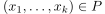
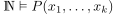
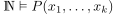
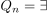
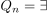
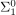
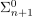

Gerarchia Aritmetica
- :PROPERTIES:
:ID: a6dd5cae-c225-49d4-8945-602100951278 :ROAMALIASES: “Insieme semiricorsivo nella gerarchia aritmetica” “Insieme ricorsivo nella gerarchia aritmetica” “Insieme aritmetico” :END:
In questa sezione si identificano i sottoinsiemi di  (vedi Insieme dei numeri naturali MK) con i predicati
(vedi Insieme dei numeri naturali MK) con i predicati  -ari (ovvero con variabili libere), per mezzo degli insiemi di verità.
-ari (ovvero con variabili libere), per mezzo degli insiemi di verità.
Scriveremo indifferentemente  oppure  per dire che .
per dire che .
 è pari e  se
è pari e  se 
 sia
sia - Un insieme è semiricorsivo se e solo se è .
- Gli insiemi
 sono esattamente i complementari degli insiemi
sono esattamente i complementari degli insiemi  .
. - Gli insiemi  sono le proiezioni rispetto ad una qualsiasi variabile degli insiemi .
- Per il Teorema di Post, quindi, gli insiemi ricorsivi sono esattamente gli insiemi
 .
. - Gli insiemi aritmetici sono la più piccola classe di insiemi contenente gli insiemi ricorsivi e chiusa per complementi e proiezioni.
Tutte le classi precedenti sono chiuse per:
- sostituzioni ricorsive mediante funzioni totali (quando viste come predicati)
- intersezioni (ovvero congiunzioni)
- unioni (ovvero disgiunzioni)
- quantificazioni limitate.
Inoltre, le classi sono chiuse per quantificazioni esistenziali (ovvero per proiezioni).
Le classi sono chiuse per quantificazioni universali.
Le classi sono chiuse per complementi (e quindi sono Algebre di Boole).
Valgono le seguenti inclusioni:
Gli insiemi aritmetici sono la più piccola classe contenente gli insiemi ricorsivi e chiusa per operatori logici.